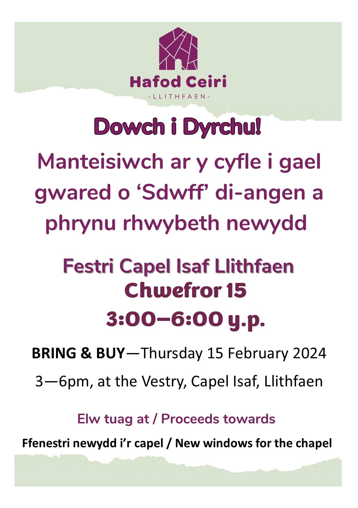
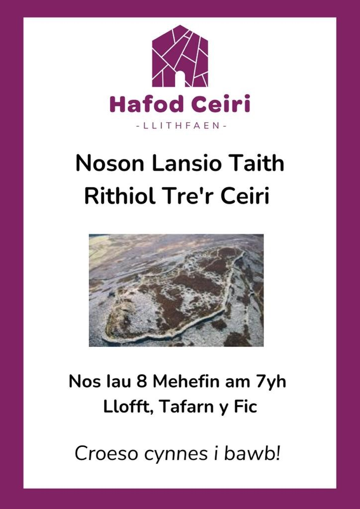

Mae syniadau Hafod Ceiri yn hen syniadau erbyn hyn, yn mynd yn ôl i’r amser pan oedd hen bost, Llithfaen ar werth, cyn i Swyddfa Nant ei brynu. Roedd yn freuddwyd yr adeg hynny i wneud canolfan ddehongli i gadw hanes Tre’r Ceiri a’r ardal yn fyw. Roedden ni wedi mynd cyn belled a chael cynlluniau wedi eu paratoi – ond swyddfa Nant aeth yno a’r freuddwyd yn gorfod aros.
Yn 2013 roedd teimlad ymhlith rhai ohonom bod y capel yn dirywio yn enbyd. Roedd y gynulleidfa yn fychan ac yn mynd yn hŷn ac yn methu ysgwyddo y cyfrifoldeb o edrych ar ȏl yr adeilad. Yn dilyn astudiaeth dichonolrwydd o ardal Llithfaen a’r cylch yn 2013, adnabuwyd yr angen am ddatblygiad fyddai yn creu adnodd cymunedol ac yn darparu gwasanaethau yn yr ardal wledig hon. Roedd yr astudiaeth yn adnabod gweledigaeth ar gyfer dyfodol mwy cynaliadwy, ac yn gweld datblygu Canolfan Dreftadaeth yn gyfrwng adfywiad economaidd , yn bodloni’r angen lleol am gyfleusterau a gwasanaethau, a gwella profiadau ymwelwyr. Roedd hi’n galondid bod yr astudiaeth yn gweld nad oedd adeilad y capel wedi mynd y tu hwnt i’w adfer.
Mae Capel Isaf Llithfaen yn adeilad rhestredig gradd 2* unigryw sydd nid yn unig yn yn nodwedd amlwg o dirlun Llithfaen, ond sydd hefyd wedi bod yn ganolog i fywyd cymdeithasol y pentref ers dechrau’r ganrif ddiwethaf. Erbyn 2013 roedd yr adeilad yn dirywio’n gyflym, ac yn peryglu dyfodol man addoli olaf y pentref. Doedd dim amdani felly ond sefydlu Cwmni Hafod Ceiri er mwyn ei ddiogelu, a datblygu canolfan dreftadaeth fydd yn gwasanaethu y gymuned gyfan. Ein amcanion ar gychwyn ein cynllun busnes cyntaf oedd:
‘Ein bwriad yw sefydlu menter fydd yn cyfrannu at adfywio’r gymuned leol yn ogystal a dehongli
treftadaeth a diwylliant unigryw yr ardal. Bydd Hafod Ceiri hefyd yn diogelu a sicrhau dyfodol
cynialadwy Capel Isaf Llithfaen fel man addoli ac adnodd cymunedol.’
Pentref chwarelyddol yng Ngogledd Penrhyn Llŷn yw Llithfaen, a ddatblygodd yn sgil agor chwareli Ithfaen yr Eifl yn 70’au y bedwaredd ganrif ar bymtheg. Ar un cyfnod roedd wyth o siopau, becws, tri chwmni bysys, tri chapel, eglwys ac ysgol yma. Yn dilyn cau y chwareli yn 60’u y ganrif ddiwethaf dirywiodd y boblogaeth, a’r llewyrch cymdeithasol a masnachol yn sgil hynny. Caewyd yr ysgol yn 1967, ac erbyn dechrau’r 80’au nid oedd ond un siop, tafarn ac un cwmni bysys ar ôl. Fel nifer o bentrefi ôl-ddiwydiannol tebyg, mae’r pentref wedi wynebu nifer o heriau yn y blynyddoedd dilynnol.
Mae’r pentref erbyn hyn yn ymhyfrydu yn ei glwstwr o fentrau cydweithredol llwyddianus. Mae’r sefydliadau hyn yn hybu adfywio cymunedol ac wedi datblygu adnoddau lleol, yn benodol Tafarn y Fic, Siop Gymunedol Pen y Groes ac erbyn hyn, Hafod Ceiri.
Mae teimlad hefyd bod adfywiad yn digwydd yn y pentref, a nifer o deuluoedd ifanc yn symud i mewn. Credwn bod hyn yn digwydd yn sgil effaith bositif y mentrau cydweithredol ar economi, amgylchedd a delwedd y pentref.
Mae’r Llithfaen a’r ardal gyfagos yn rhan o AHNE Llŷn. Ar gopa mynydd Ceiri gerllaw mae un o safleoedd cyn-hanesyddol pwysicaf a mwyaf godidog Cymru sef bryngaer Tre’r Ceiri. Does nunlla yn yr ardal yn dehongli hanes ‘Tre’r Ceiri,’ sy’n denu rhwng 7,000 a 10,000 y ymwelwyr yn flynyddol, gyda nifer sylweddol o’r rhain yn ymweld â Llithfaen. Mae Ardal Harddwch Naturiol Eithriadol Llŷn wedi adnabod Tre’r Ceiri ymysg y priodweddau hanesyddol yn yr ardal sydd angen eu diogelu ac mae un o'r prif lwybrau i'r fryngaer yn cychwyn o Capel Isaf.
I fynd yn ôl i gyfnos 2014. O dipyn I beth, ar ȏl misoedd o lenwi ffurflenni a thrafodaethau cafodd ‘Hafod Ceiri’ statws elusenol.
Mae gynnon ni fwrdd o saith o ymddiriedolwr. Mae aelodau’r bwrdd yn meddu ar ystod eang o sgiliau cyfreithiol ac ariannol, yn ogystal a phrofiadau gwerthfawr o fyd busnes a datblygu mentrau cymdeithasol. Mae Pwyllgor gwaith yn cynorthwyo’r gwaith gweithredol mewn rôl ymgynghorol i gefnogi’r prosiect.
Yr adeilad sy’n ganolog i’r fenter yw Capel M.C. Llithfaen neu Capel Isa’.
Codwyd yr adeilad o garreg ithfaen leol yn 1905, a nid yw wedi cael ei addasu o gwbl ers y cyfnod hwn tan rwan. Mae'n adeilad unigryw ac yn werthfawr fel crair hanesyddol ynddo ei hun. Disgrifir tu mewn y capel gan CADW fel ‘gofod trawiadol i eistedd tua 700, wedi ei gynllunio yn ofalus, - yn ganolbwynt crefyddol a chymdeithasol i'r gymuned gyfan mewn amser o ffyniant economaidd yn sgil y diwydiant chwareli yn yr ardal.
Mae’r capel yn Adeilad Rhestredig Gradd II*. Fe’i rhestrwyd oherwydd ansawdd dyluniad y tu mewn gan gynnwys y seddau pren yn y galeri. ’Nodwedd unigryw i'r capel yw'r ffaith bod rhan ddwyreiniol o'r galeri wedi ei adeiladu yn arbennig ar gyfer y ddau gôr llwyddiannus oedd yn y pentref ar y pryd.
Roedd dirywiad syfrdanol wedi bod yng nghyflwr y capel yn ystod y blynyddoedd diwethaf. Mae’r dirywiad i strwythur allanol yr adeilad yn golygu fod y gwynt a’r glaw yn achosi niwed sylweddol i gyflwr mewnol yr adeilad. Roedd angen cymeryd camau brys i ddiogelu nifer o nodedig oedd o dan fygythiad. Roedd yn dirywio yn gyflym ac os nad oedd camau brys yn cael eu cymeryd roedd perygl gwirioneddol y byddai yr adeilad yma yn cael ei golli am byth. Byddai adfail mor amlwg yn adlewyrchu’n wael ar y pentref, heb son am y niwed i amgylchedd esthetig yr ardal.
Mae’r Capel yn eiddo i’r Eglwys Bresbyteraidd yng Nghymru. Roedd wedi bod ar werth ers nifer o flynyddoedd, ond er peth diddordeb ni lwyddwyd i ganfod prynwr. Ar ȏl trafodaethau hir eto penderfynodd yr eglwys Bresbyteraidd roi les i Hafod Ceiri o 99 mlynedd ar yr adeilad. Byddai unrhyw ddirywiad pellach yn nghyflwr yr adeilad hefyd yn fygythiad i’r unig fan addoli sy’n goroesi yn Llithfaen heddiw.
Yn 2016 aethpwyd ati i lunio cais anferth am arian mawr oedd oddeutu miliwn o bunnau fyddai yn gwireddu y freuddwyd o adeiladu y ganolfan i gyd a rhoi arian refeniw i gyflogi. Trosglwyddo asedau cymunedol oedd y grant dan nawdd y Loteri Genedlaethol. Llwyddwyd i fynd trwy’r rownd gyntaf a chael £50 000 i wneud y gwaith caib a rhaw sef cael set o gynlluniau, adroddiadau manwl ar yr adeilad, caniatâd gan y cyngor, yr headuriaeth a CHADW a phethau angenrheidiol eraill oedd eu hangen i symud ymlaen. Yn anffodus ni lwyddwyd i ddenu gweddill yr arian a hynny yn ôl yr adborth oherwydd nad oedd digon o bobol yn ymweld a’r ardal o’i gymharu a rhai o’r prosiectau eraill oedd wedi eu sefydlu mewn trefi. Roedd hyn yn rhwystredig braidd i ni gan ein bod wedi gwneud bob dim oedd angen, ond ein bod mewn lleoliad gwledig yn hytrach na threfol. Ond, roedd rhaid llyncu’r bilsen. Roedd hi’n anodd iawn mynd yn ôl i ail edrych ar bopeth a meddwl beth oedd y ffordd ymlaen. Bu Alys Lloyd Jones, swyddog adfywio yr ardal yn allweddol mewn cadw hwyliau a’n cefnogi trwy’r amser anodd yma.
Un peth da ddaeth o fethiant y cais oedd bod y gwaith caib a rhaw wedi ei wneud ar ganiatâd cynllunio, dylunio cynlluniau a chael adroddiadau ar bopeth o asbestos i ystlymod!
Sylweddolwyd yn fuan nad oedd posib symud ymlaen i’r ganolfan ei hun heb ddiogelu yr adeilad oedd yn dal i ddirywio. Roedd rhaid ymygymeryd a’r gwaith cynnal a chadw brys oedd ei angen er mwyn diogelu strwythur adeiladol y capel, a rhwystro unrhyw ddifrod pellach i’r nodweddion unigryw, yn benodol y Galeri a seddau’r côr. Nid yw cael arian grant ar gyfer gwaith cyfalaf yn unig yn hawdd ond ar ôl cnocio nifer o ddrysau cafwyd llwyddiant mewn cael arain gan CADW, Garfield Weston Foundation, AOHNE, Cyngor Gwynedd, cronfa Dreftadaeth y Loteri a bu Cronfa Bensaerniol y Loteri yn hynod dda efo ni. Mae’r arian yma wedi llwyddo i ddiogelu y to fydd yn arbed y tamprwydd o’r adeilad, gwneud gwaith ar y gwterydd a’r peipiau dŵr glaw ac mae hefyd wedi sicrhau ein bod yn gallu adfer y nenfwd addurniedig y tu mewn i’r prif adeilad, cael drws newydd ac mae’r arian hefyd yn ei le i gael ffenestri newydd yn y prif adeilad. Yn dilyn y gwaith yma bydd yr adeilad yn saff oddiwrth y tywydd ac roedd hi’n braf peidio edrych yn betrusgar trwy’r ffenest gegin yn dilyn y stormydd ddecrhau’r flwyddyn i weld os oedd to’r capel yn dal yno!
Bu’r pandemig yn arafu tipyn ar y gwaith ond mae’r cwbl, heblaw y ffenestri bellach wedi ei gwblhau.
Y cam nesaf sydd ar y gweill ar hyn o bryd fydd gosod caffi bychan ar ochr ddeheuol yr adeilad yn edrych ar y golygfeydd godidog dros am ynysoedd Tudwal, bae Ceredigion ac i lawr am sir Benfro pan fydd y tywydd yn caniatáu. Cafwyd arian gan y Gronfa Ddatblygu cymunedau Gwledig, Cyngor Gwynedd, AOHNE a rhaglen Cyfleusterau cymunedol i ddatblygu yr adeilad a gobeithio medru agor fel caffi bychan yn fuan. Yr ydym wedi bod yn ffodus i allu dilyn cwrs MIWTINI wedi cael eu drefnu gan Menter Môn i'n trwytho mewn elfennau rhedeg caffi – o hylendid ac alergenau i frandio, prisio a marchnata. Bydd hyn yn sicrhau incwm i’r fenter gan ein bod wrth gwrs yn dal i orfod talu biliau gan ein bod wedi cymryd y les. Yr ydym hefyd newydd gael arian i ddatblygu nwyddau unigryw i ddathlu Tre’r Ceiri a byddwn yn symud dros yr Haf i drefnu siop ar lein i werthu y nwyddau rheini.
Yn ogystal a’r gwaith adeiladu efallai mae’r gwaith pwysicaf mae Hafod Ceiri yn ei wneud ydi codi ymwybyddiaeth yn yr ardal o’n treftadaeth, ein hanes a’n diwylliant. Cyn dechrau ar y fenter yr oeddem fel criw yn cynnal sgyrsiau misol ar elfennau o hanes lleol a rheini wrth gwrs yn mynd ar Zoom dros y cyfnod clo. Bwriedir ail gychwyn ar y rhain yn ystod y gaeaf nesaf gan ein bod heb gynnal rhai eleni oherwydd ansicrwydd y cyfyngiadau, ansicrwydd fyddai’r adeilad ar gael a theimlad bod pawb braidd wedi laru ar Zoom! Yr ydym hefyd yn trefnu trip blynyddol i ‘nabod bro, yn trefnu pererindod flynyddol i eglwys neu gapel yn yr ardal. Y prosiect difyr diwethaf oedd adnabod 40 o adeiladau yn y pentref oedd, ar un adeg wedi bod yn fusnes, yn siop, yn gwt crydd, yn garej, yn siop tsips, yn syrjeri, yn gwt barbar neu’n fanc a chawsom nifer o gyfarfodydd difyr iawn ar Zoom yn hel yr hanesion llafar am y lleoedd yma. Croniclwyd y cyfan ar godau QR ar yr adeiladau mewn 4 iaith, Cymraeg, Almaeneg Ffrangeg a Saesneg gan lunio map i fynd efo nhw.
Yn dilyn o’r prosiect yma yr ydym yn dechrau rŵan ar brosiect arall o osod taith rithiol fydd yn eistedd mewn app ar ffôn neu dabled o’r capel i Dre’r Ceiri fydd yn dweud ychydig o hanesion wrth gerdded.
Y dyfodol? Mae’r freuddwyd wreiddiol yn dal i fynd a’n bwriad yn y pen draw yw:
Ar lawr gwaelod y capel byddwn yn datblygu canolfan dreftadaeth yn bennaf i ddehongli hanes Tre’r Ceiri, sinema fechan, caffi, a dwy uned waith. Yn y festri bydd ystafell gyfarfod ar gyfer addoli wythnosol.
Byddwn yn cadw y llofft uchaf, neu’r galeri fel ag y mae gan ei fod yn awditorium heb ei ail â 300 sedd fydd yn darparu gofod aml bwrpas ar gyfer cyngherddau, eisteddfodau, cynhebryngau, priodasau, cymanfaoedd, recordio, ac unrhyw ddigwyddiad lle mae angen lle gwag sylweddol.
Byddwn yn cyflogi staff fel y medrwn, er mwyn datblygu cyfres o weithgareddau, digwyddiadau, a gwireddu’r cynllun hirdymor. Y bwriad yw sefydlu canolfan hunangynhaliol fydd yn cynnal swyddi a darparu gwasanaethau i’r gymuned ac ymwelwyr fel ei gilydd am flynyddoedd i ddod.
Newyddion
Nos Fawrth 21 Hydref Meilyr Emrys - Cymdeithas Bêl-droed 'Genedlaethol' Amgen 1879-86
7:00 y.h. yn y festri - Capel Isa, Llithfaen
Awst 25-28, 2025: Arddangosfa - "Llithfaen Ddoe a Heddiw"
O Ddydd Llun 25 Awst hyd at Ddydd Iau 28 Awst o 2:00 - 7:00yp yn "Capel Isa, Llithfaen": Arddangosfa - "Llithfaen Ddoe a Heddiw". Bydd y caffi yn agored rhwng 1-6 tra bo'r arddangosfa yn y festri (Llun i Iau).
Dydd Sadwrn 19 Gorffennaf, 2025: Taith Nabod Bro
Dydd Sadwrn, 19 Gorffennaf aeth ugain ohonom ar drip blynyddol ‘Nabod Bro’ Hafod
Ceiri. Eleni ‘Melinau Llŷn’ oedd ein thema ac ar ôl cychwyn yn weddol brydlon am
ddeg nid oedd fawr o daith i’r arhosiad cyntaf sef ymweld â melin Carnguwch. Yno
i’n cyfarfod roedd Richard Ellis ac roedd hi mor braf gweld bob Richard yn falch
iawn o’i linach a’i gefndir yn Carnguwch a’r ffaith bod ei deulu wedi bod yn ffermio’r
tir am dros dri chant o flynyddoedd. Rhannodd Richard hefyd y casgliad o hen offer a
thaclau sydd wedi hel o gwmpas y fferm a’r tŷ drwy’r canrifoedd ac roedd hi’n anodd
iawn gadael lle mor ddifyr.
Troi trwyn y bws wedyn drwy Llannor ac i lawr i felin Rhyd Hir neu melin Bodfel.
Mae’r felin wedi ei hadnewyddu ac yma roedd Carole ac Adrian yn ein tywys o
gwmpas y felin a’r gerddi. Y felin hon eto yn dyddio yn ôl i ‘r ail ganrif ar bymtheg ac,
yn y cyfnod hwnnw yn ganolbwynt y gymuned yn yr ardal.
Erbyn hyn roedd hi’n amser cinio ac roedd pawb wedi mwynhau pryd blasus iawn yn
Tŷ Newydd, Aberdaron.
Cerdded wedyn at y felin yn Aberdaron lle mae criw gweithgar wrthi yn adnewyddu
yr adeilad a chawsom orig ddifyr iawn yng nghwmni Glyn Roberts yn dweud hanes y
felin a’r gwaith sydd ar droed. Mae’rv adeilad presennol yno ers y bedwaredd ganrif
ar bymtheg ond mae melin wedi bod ar y safle ers y drydedd ganrif ar ddeg.
Yr ydym yn chwilio am unigolyn brwdfrydig i weithredu fel swyddog gweinyddol/marchnata i gwmni Hafod Ceiri sydd ar fin agor caffi yn adeilad Capel M.C., Llithafen. Swydd rhan amser dros dro (tan 31 Rhagfyr 2024) fydd hon ond gobeithir y gellir dal i’w hariannu i’r flwyddyn newydd. Disgwylir i’r swydd gychwyn mor fuan â phosib ar ôl y dyddiad cau.
Dyddiad cau: 22 Gorffennaf 2024 - Mae'r cyfnod ymgeisio wedi dod i ben
Manteisiwch ar y cyfle i gael gwared o "Sdwff" di-angen a phrynu rhywbeth newydd!
Dydd Fawrth Ebrill 23, 2024 7:30pm Dafydd Wigley - "Perthyn i Gangstar"
Dydd Mercher Mawrth 27, 2024 10:00am-2:00pm Gweithdy Celf
Nos Fawrth Mawrth 19, 2024 7:30 Cofis, Cymru a'r Mauretania
Darlith gan Ifan Erwyn Pleming - "Cofis, Cymru a'r Mauretania". Am 7:30 yn Festri Capel Isa Llithfaen. Bydd paned a chacen ar gael ar ddiwedd y sgwrs – Croeso cynnes i bawb.
Nos Fawrth 27 Chwefror, 2024 7:30 Meddyges Bryn Canaid
Darlith gan Llŷr Titus - "Meddyges Bryn Canaid". Am 7:30 yn Festri Capel Isa Llithfaen. Bydd paned a chacen ar gael ar ddiwedd y sgwrs – Croeso cynnes i bawb.
Dydd Iau 15 Chwefror, 2023: Dowch i Dyrchu
Manteisiwch ar y cyfle i gael gwared o "Sdwff" di-angen a phrynu rhywbeth newydd!

Dydd Iau 14 Rhagfyr, 2023: Dowch i Dyrchu
Manteisiwch ar y cyfle i gael gwared o "Sdwff" di-angen a phrynu rhywbeth newydd!
Dydd Mawrth 5 Rhagfyr, 2023 7:30pm: Ar Dorthwy'r Nadolig
Eitemau gan ddoniau lleol
Nos Fawrth 28 Tachwedd, 2023: Baled Largo a thref Pwllheli
Dydd Mercher 1af Tachwedd 2023 am 10:00 - 2:00
Nos Fawrth 24 Hydref 2023 am 7:30: Bob Morris "Y Cymru cudd"
Dydd Mercher 4 Hydref, 2023: Dowch i Dyrchu
Manteisiwch ar y cyfle i gael gwared o "Sdwff" di-angen a phrynu rhywbeth newydd!
28-31 Awst 2023: ARDDANGOSFA "Llithfaen Ddoe a Heddiw
7 Awst 2023: Darlith gan yr Athro E. Wyn James
Haf 2023: Chwaraeon Wythnosol
Bydd sesiynau chwaraeon wythnosol ar gae chwarae Llithfaen yn cychwyn fore Mawrth, 25 Gorffennaf o 10 y bore hyd 11:30. Croeso i blant cynradd
dydd Iau, 8 Mehefin: Lansio Taith Rithiol Tre'r Ceiri 7:00yh

Ebrill/Mai 2023: Ffenestri:
Mae’r gwaith ar y Capel yn mynd rhagddo. Ac mae tipyn o newyddion cyffrous
gennym bellach, mae ganddon ni gysylltiad Wi-Fi a ffôn yn y capel, ond yn
bwysicach na dim mae’r ffenestri yn eu lle. Mae’n dda gweld ffenestri taclus yn y
capel unwaith eto a diolch o waelod calon i gwmni Acoia am wneud gwaith
crefftus iawn ar y fframiau, er gwaethaf rhai mân anafiadau yn y broses.
Gobeithio Carwyn yn dal i fedru gwneud gwaith mor grefftus heb flaen ei fys!!
Diolch hefyd i Ardal o Harddwch Naturiol Llŷn a Cronfa Dreftadaeth Bensaerniol
Cymru am nawdd i wneud y gwaith yn bosib.
dydd Llun, 20 Chwefror: Cynllun Costau Byw:
Hoffwn eich atgoffa bod angen gwario eich talebau Costau Byw. Os and ydych wedi eu defnyddio ac angen i rywun eich helpu i nȏl y nwyddau, anfonwch neges ar 07814894118
Mae cyfarfod yn festri Capel M.C. Llithfaen dydd Llun, 20 Chwefror am 10 o'r gloch lle bydd powlen o gawl i chi a sgwrs gan arbenigwr ar ‘cadw’n gynnes’ a chymorth fydd i'w gael i helpu. Bydd mwy o dalebau Costau Byw ar gael yn ystod y sesiwn.
Os ydach chi yn ei chael hi'n anodd dod, gallwn drefnu cludiant trwy anfon negas ar 07814894118 neu e-bostio sianelen@live.co.uk.
Rhagfyr 2022:
Ar Drothwy'r Nadolig Tabor Llithfaen: 1 Rhagfyr 2022 7:30pm - Dathlu'r Nadolig yng nghwmni doniau lleol a lluniaeth ysgafn. (Tocynnau £5)
2022 Haf o Hwyl!:
Dros yr haf cynhaliwyd nifer o weithdai amrywiol i blant y pentref a’r ardal cyfagos yn dilyn llwyddiant y gweithdai celf blaenorol.
Ar ddydd Mercher, 27ain o Orffennaf bu taith yng ngwmni Rhys Mwyn i Dre’r Ceiri. Cafwyd diwrnod hynod o ddiddorol wrth iddo esbonio trefn bywyd y triogolion yn y cyfnod yna a sut oedd yr adeiladau yn cael eu defnyddio. Bu’r criw yn casglu delweddau a lluniau i’w defnyddio yn y gweithdai a oedd i ddilyn yr ymweliad.
Roedd yr ail weithdy am ddau ddiwrnod yng ngofal Catrin Williams gan edrych ar ddelweddau a phatrymau a gasglwyd o Tre’ r Ceiri i greu lluniau a phatrymau i’w ddefnyddio ar ddillad.
Cafwyd llawer o hwyl yn y gweithdy nesaf pan aeth y plant allan i gasglu mwya’r duon, ei berwi ar dân iawn er mwyn cael lliw y ffrwythau i greu hylif i liwio defnydd. Gwnaed yr un peth gyda crwyn nionod. Rhaid oedd wedyn socian y dillad (crysau T) yn yr hylif am beth amser fel bo’r dilledyn wedi newid ei liw gyda lliwiau o fyd natur.
Daeth Catrin Williams yn ȏl at y plant am y gweithdy nesaf i addurno’r crysau T gyda’r patrymau a wnaethpwyd yn y gweithdy blaenorol. Cafodd y plant y crysau addurnedig fel gwobr am eu gwaith.
Roedd y gweithdy olaf yng ngwmni Dafydd Roberts o Drefor – gweithdy oedd hwn I ddylunio ffenestri lliw ar y thema o Dre’r Ceiri.
Diolch yn arbennig i Lois Fychan am gynnal sesiynnau chwaraeon yn wythnosol drwy gydol gwyliau’r haf ar y cae chwarae.
Medi 2022:
Taith 'Nabod Bro: 24 Medi 2022 10:00am -
Awst 2022:
Taith 'Pererindod: 27 Awst 2022 9:30am -
Chwefror 2022:
Gweithdy Celf: 23 Chwefror 2022 10:00am - 2:30pm
Hydref 2021:
Gweithdy Celf: 27 Hydref 2021 10:00am - 2:30pm
Gorffenaf 2021:
Taith o gwmpas Llithfaen ddoe: 29 Gorffenaf 2021 5:30pm
Mehefin 2021:
Helfa Drysor: 9 Mehefin 2021 5:30pm-6:30pm
Hafod Ceiri: Agor y drws: 5 Mehefin 2021 2:00pm-5:00pm.
Mai 2021:
Sgwrs - Nos Fercher 26 Mai 7:30 - Cyflwyniad i'r prosiect QR diweddar - "Busnesau Llithfaen"
Mawrth 2021:
Sgwrs gan Gwyn Vaughan Jones a Siri - Nos Fercher 17 Mawrth 7:30 - "Norwy- Pwy yw'r bobol frodorol?"
Mae'r to bron a gorffen a gweithwyr TIR wedi bod yn gweithio yn ddiwyd yn ystod y cyfnod oer i gael gorffen y gwaith. Diolch i CADW hefyd am arian ychwanegol i wneud gwaith ar y plastar mewnol a'r drws ffrynt. Bydd y gwaith yma yn gorffen yn fuan hefyd. Byddwn wedyn yn glanhau yr adeilad cyn symud ymlaen i'r cam nesaf.
Ionawr 2021:
Sgwrs gan Trystan Lewis Nos Fercher 20 Ionawr 7:30 - "Byd y Cerddor"
Ar Drothwy'r Nadolig 2020:
Gweler isod, fideo o gyngherdd Nadolig Hafod Ceiri a gynhaliwyd "ar-lein" eleni oherwydd mesurau diogelwch y pandemig. Mwynhewch, a'n dymuniad gorau i chwi am Nadolig Llawen a Heddychlon (a Blwyddyn Newydd Dda).
Rhagfyr 2020:
Mae'r gwaith yn mynd rhagddo ar y capel. Yr unig beth sydd angen rwan ydi tywydd gwell !!
Yr ydym wedi cael mwy o arian gan CADW i adnewyddu y nenfwd tu mewn a chael y gwaith plastar yn ôl fel ag yr oedd.
Cafwyd sgwrs gan Geraint Jones ar "Y Dyn Lleiaf yn y Byd" fis Hydref, a gan Bob Morris ar "Chwedlau Arthur" fis Tachwedd. Yn y flwyddyn newydd byddwn yn cael sgyrsiau ar y trydydd nos Fercher yn y mis.
Medi 2020:
O'r diwedd mae'r gwaith wedi cychwyn ar gapel M.C. Llithfaen! Llofnodwyd y les am yr adeilad ym mis Chwefror eleni, ond daeth y cyfnod anodd yma ar ein gwarthaf ac er ein bod wedi sicrhau yr arian daeth y gwaith i stop cyn iddo ychwyn bron.
Ond erbyn hyn mae'r gwaith wedi ail ddechrau ac y mae'r grantiau cychwynnol hyn yn talu i ddiogelu'r to a chryfhau y nenfwd. Diolch i "Cronfa Datblygu Cynaladwy AHNE Llŷn", "Sefydliad Garfield Weston", "Cronfa'r Degwm", "CADW", a "Chronfa Dreftadaeth y Loteri" am ein cefnogi i wireddu y cam hwn.
Ein bwriad terfynol yn yr adeilad yw creu dau lawr yn y prif adeilad: y llawr uchaf yn agored gan gadw nodweddion unigryw y aleri a'r seddi côr; bydd y llawr isaf yn cael ei ddatblygu yn gaffi bychan a chanolfan dreftadaeth yn canolbwyntio ar hanes lleol Tre'r Ceiri.
Wrth gwrs, oherwydd y cyfyngiadau sydd yn bodoli ni fu'n bosib cychwyn ar weithareddau treftadaeth oedd gennym ar y gweill ond cafwyd ambell gyfarfod Zoom yn ystod misoedd y clo. Ein bwriad yw ail ddechrau cyfarfodydd misol pan fydd y sefyllfa yn haws o ran cynnal digwyddiadau mwy dan do.
Digwyddodd y bererindod flynyddol ddydd Sul, 30 Awst. Cerddodd pawb o eglwys Pistyll i eglwys Nefyn a diolch i Ann Roberts am drefnu a diolch am y croeso yn yr amgueddfa forwrol.
Mae'n gyfnod heriol iawn yn ariannol i bob mudiad a gan na fedrwn gynnal gweithgareddau a'r biliau yn dal i ddod i mewn yr ydym wedi agor tudalen "Just Giving" - os hoffech gyfrannu at y fenter byddai hyn yn cael ei dderbyn yn ddiolchgar iawn.
Yr ydym yn gweithio ar wefan (hon), ac y mae gennym bresenoldeb ar y cyfryngau cymdeithasol:- hoffwch dudalen Hafod Ceiri ar Facebook a dilynwch @HafodCeiri ar Twitter.


{kind=link}
{kind=link}
{kind=link}
{kind=link}
{kind=link}
{kind=link}
{kind=link}
{kind=link}
{kind=link}
{kind=link}
{kind=link}
{kind=link}
{kind=link}
{kind=link}
{kind=link}